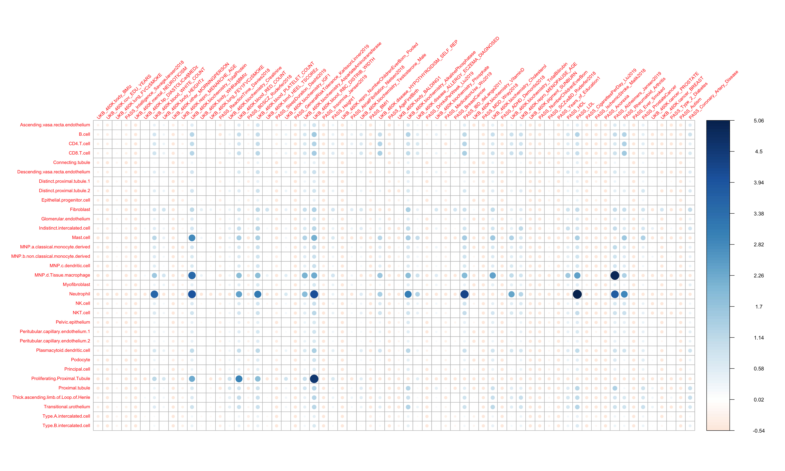
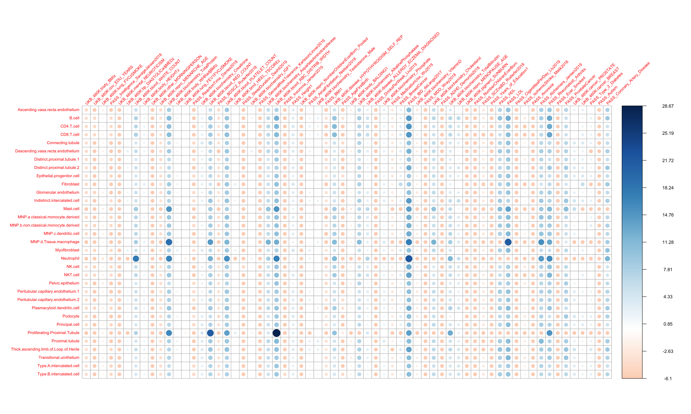
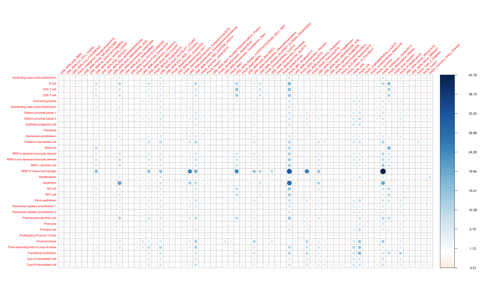
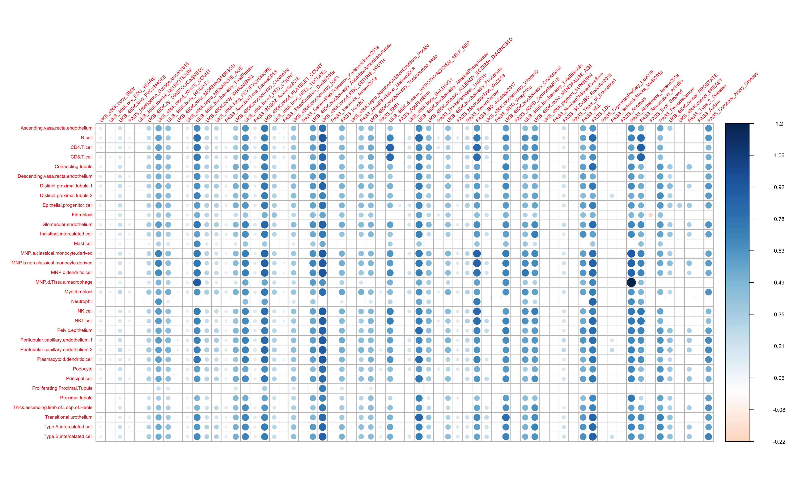
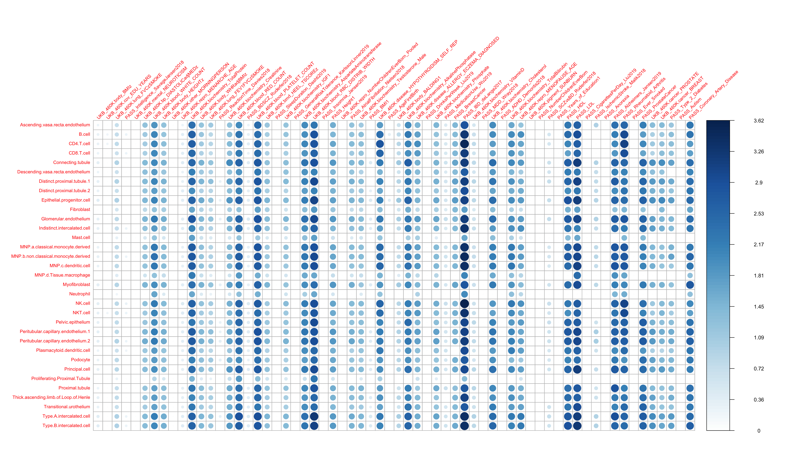
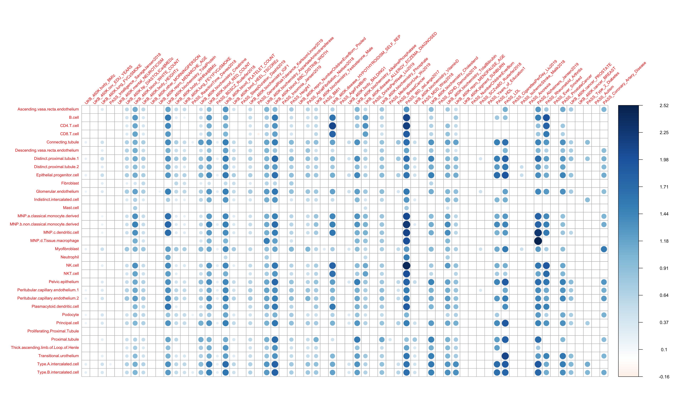

Last updated: 2020-03-02
workflowr checks: (Click a bullet for more information) ✖ R Markdown file: uncommitted changes
The R Markdown is untracked by Git. To know which version of the R Markdown file created these results, you’ll want to first commit it to the Git repo. If you’re still working on the analysis, you can ignore this warning. When you’re finished, you can run wflow_publish to commit the R Markdown file and build the HTML.
✔ Environment: empty
Great job! The global environment was empty. Objects defined in the global environment can affect the analysis in your R Markdown file in unknown ways. For reproduciblity it’s best to always run the code in an empty environment.
✔ Seed:
set.seed(20200127)
The command set.seed(20200127) was run prior to running the code in the R Markdown file. Setting a seed ensures that any results that rely on randomness, e.g. subsampling or permutations, are reproducible.
✔ Session information: recorded
Great job! Recording the operating system, R version, and package versions is critical for reproducibility.
✔ Repository version: 34e044d
wflow_publish or wflow_git_commit). workflowr only checks the R Markdown file, but you know if there are other scripts or data files that it depends on. Below is the status of the Git repository when the results were generated:
Ignored files:
Ignored: .Rhistory
Ignored: .Rproj.user/
Ignored: code/.DS_Store
Ignored: data/.DS_Store
Ignored: data/Healthy_gene_score_Top10_Feb1/
Untracked files:
Untracked: analysis/Blood_healthy_celltype_enriched.Rmd
Untracked: analysis/Brain_healthy_celltype_enriched.Rmd
Untracked: analysis/Colon_healthy_celltype_enriched.Rmd
Untracked: analysis/Kidney_healthy_celltype_enriched.Rmd
Untracked: analysis/Lung_healthy_celltype_enriched.Rmd
Untracked: code/TWAS_data_process_for_trait.R
Untracked: code/compute_sd_annot2.R
Untracked: code/genes_to_snps.R
Untracked: code/genes_to_snps_promoter.R
Untracked: code/module_size.R
Untracked: code/postprocess_TWAS.R
Untracked: code/process_modules_workflow.R
Untracked: code/web_scrape_TWAS.R
Untracked: data/Modules/
Untracked: data/UKB_460K.disease_RESPIRATORY_ENT.tar.bz2
Untracked: docs/figure/Blood_healthy_celltype_enriched.Rmd/
Untracked: docs/figure/Brain_healthy_celltype_enriched.Rmd/
Untracked: docs/figure/Colon_healthy_celltype_enriched.Rmd/
Untracked: docs/figure/Lung_healthy_celltype_enriched.Rmd/
Untracked: output/Etable_for_grant_Feb27_2020.csv
Untracked: output/healthy_celltype_enriched_blood_output_Mar1_2020.rda
Untracked: output/healthy_celltype_enriched_brain_output_Mar1_2020.rda
Untracked: output/healthy_celltype_enriched_colon_output_Mar1_2020.rda
Untracked: output/healthy_celltype_enriched_ens_output_Mar1_2020.rda
Untracked: output/healthy_celltype_enriched_kidney_output_Mar1_2020.rda
Untracked: output/healthy_celltype_enriched_lung_output_Mar1_2020.rda
Untracked: output/healthy_celltype_enriched_pancreas_output_Mar1_2020.rda
Untracked: output/pEtable_for_grant_Feb27_2020.csv
Unstaged changes:
Modified: analysis/IBD_healthy_modules.Rmd
Modified: code/ALL_bedgraph_calc.R
Modified: code/build_module_annotations2.R
Modified: code/curate_postprocessed_matrix.R
get_Etable = function(ff, index= 'ABC'){
E_table = ff[,,index,3]
pE_table = ff[,,index,4]
qE_table = matrix(qvalue(as.vector(pE_table), pi0=1)$qvalues, nrow = nrow(E_table), ncol = ncol(E_table))
pE_table2 = matrix(qvalue(as.vector(pE_table), pi0=1)$pvalues, nrow = nrow(E_table), ncol = ncol(E_table))
E_table[which(qE_table > 0.01 & pE_table2 > 0.001)] = 1
E_table[E_table < 1.1] = 1
Edif_table = E_table - mean(E_table)
return(Edif_table)
}get_tau_table = function(ff, index= 'ABC'){
tau_table = ff[,,index,1]
ptau_table = ff[,,index,2]
qtau_table = matrix(qvalue(as.vector(ptau_table))$qvalues, nrow = nrow(tau_table), ncol = ncol(tau_table))
ptau_table2 = matrix(qvalue(as.vector(ptau_table))$pvalues, nrow = nrow(tau_table), ncol = ncol(tau_table))
tau_table[which(qtau_table > 0.001)] = 0
return(tau_table)
}We load the tau-star and enrichment results for 64 traits for 51 cell-type modules from healthy colon.
LDSC_proc_results = get(load("/Users/kushaldey/Documents/singlecellLDSC/output/healthy_celltype_enriched_kidney_output_Mar1_2020.rda"))
dim(LDSC_proc_results)[1] 33 64 3 4dimnames(LDSC_proc_results)[[1]] [1] "Ascending.vasa.recta.endothelium"
[2] "B.cell"
[3] "CD4.T.cell"
[4] "CD8.T.cell"
[5] "Connecting.tubule"
[6] "Descending.vasa.recta.endothelium"
[7] "Distinct.proximal.tubule.1"
[8] "Distinct.proximal.tubule.2"
[9] "Epithelial.progenitor.cell"
[10] "Fibroblast"
[11] "Glomerular.endothelium"
[12] "Indistinct.intercalated.cell"
[13] "Mast.cell"
[14] "MNP.a.classical.monocyte.derived"
[15] "MNP.b.non.classical.monocyte.derived"
[16] "MNP.c.dendritic.cell"
[17] "MNP.d.Tissue.macrophage"
[18] "Myofibroblast"
[19] "Neutrophil"
[20] "NK.cell"
[21] "NKT.cell"
[22] "Pelvic.epithelium"
[23] "Peritubular.capillary.endothelium.1"
[24] "Peritubular.capillary.endothelium.2"
[25] "Plasmacytoid.dendritic.cell"
[26] "Podocyte"
[27] "Principal.cell"
[28] "Proliferating.Proximal.Tubule"
[29] "Proximal.tubule"
[30] "Thick.ascending.limb.of.Loop.of.Henle"
[31] "Transitional.urothelium"
[32] "Type.A.intercalated.cell"
[33] "Type.B.intercalated.cell" dimnames(LDSC_proc_results)[[2]] [1] "UKB_460K.body_BMIz"
[2] "UKB_460K.cov_EDU_YEARS"
[3] "UKB_460K.lung_FVCzSMOKE"
[4] "PASS_Intelligence_SavageJansen2018"
[5] "UKB_460K.mental_NEUROTICISM"
[6] "UKB_460K.bp_DIASTOLICadjMEDz"
[7] "UKB_460K.blood_WHITE_COUNT"
[8] "UKB_460K.body_HEIGHTz"
[9] "UKB_460K.other_MORNINGPERSON"
[10] "UKB_460K.repro_MENARCHE_AGE"
[11] "UKB_460K.biochemistry_TotalProtein"
[12] "UKB_460K.body_WHRadjBMIz"
[13] "UKB_460K.lung_FEV1FVCzSMOKE"
[14] "PASS_ReactionTime_Davies2018"
[15] "UKB_460K.biochemistry_Creatinine"
[16] "UKB_460K.blood_RED_COUNT"
[17] "PASS_BDSCZ_Ruderfer2018"
[18] "UKB_460K.blood_PLATELET_COUNT"
[19] "UKB_460K.bmd_HEEL_TSCOREz"
[20] "PASS_SleepDuration_Dashti2019"
[21] "UKB_460K.biochemistry_IGF1"
[22] "PASS_GeneralRiskTolerance_KarlssonLinner2019"
[23] "UKB_460K.biochemistry_AspartateAminotransferase"
[24] "UKB_460K.blood_RBC_DISTRIB_WIDTH"
[25] "PASS_Insomnia_Jansen2019"
[26] "PASS_Height1"
[27] "UKB_460K.repro_NumberChildrenEverBorn_Pooled"
[28] "PASS_AtrialFibrillation_Nielsen2018"
[29] "UKB_460K.biochemistry_Testosterone_Male"
[30] "PASS_BMI1"
[31] "UKB_460K.disease_HYPOTHYROIDISM_SELF_REP"
[32] "PASS_AgeFirstBirth"
[33] "UKB_460K.body_BALDING1"
[34] "UKB_460K.biochemistry_AlkalinePhosphatase"
[35] "UKB_460K.disease_ALLERGY_ECZEMA_DIAGNOSED"
[36] "PASS_DrinksPerWeek_Liu2019"
[37] "UKB_460K.biochemistry_Phosphate"
[38] "PASS_MedicationUse_Wu2019"
[39] "PASS_BreastCancer"
[40] "PASS_IBD_deLange2017"
[41] "UKB_460K.biochemistry_VitaminD"
[42] "PASS_MDD_Wray2018"
[43] "UKB_460K.biochemistry_Cholesterol"
[44] "PASS_ADHD_Demontis2018"
[45] "UKB_460K.biochemistry_TotalBilirubin"
[46] "UKB_460K.repro_MENOPAUSE_AGE"
[47] "UKB_460K.pigment_SUNBURN"
[48] "PASS_NumberChildrenEverBorn"
[49] "PASS_SCZvsBD_Ruderfer2018"
[50] "PASS_Years_of_Education1"
[51] "PASS_HDL"
[52] "PASS_LDL"
[53] "PASS_CigarettesPerDay_Liu2019"
[54] "PASS_IschemicStroke_Malik2018"
[55] "PASS_Anorexia"
[56] "PASS_Alzheimers_Jansen2019"
[57] "PASS_Rheumatoid_Arthritis"
[58] "PASS_Ever_Smoked"
[59] "PASS_ProstateCancer"
[60] "UKB_460K.cancer_PROSTATE"
[61] "UKB_460K.cancer_BREAST"
[62] "PASS_Type_2_Diabetes"
[63] "PASS_Autism"
[64] "PASS_Coronary_Artery_Disease" dimnames(LDSC_proc_results)[[3]][1] "100kb" "ABC" "Roadmap"dimnames(LDSC_proc_results)[[4]][1] "taustar" "p-taustar" "E" "p.E" EE = get_Etable(LDSC_proc_results, '100kb')
corrplot(EE, is.corr = F, tl.cex = 0.7, tl.srt = 45)
apply(EE, 2, mean)[order(apply(EE, 2, mean), decreasing = T)][1:10] UKB_460K.blood_RBC_DISTRIB_WIDTH
1.2242936
UKB_460K.biochemistry_TotalProtein
0.9680214
UKB_460K.blood_PLATELET_COUNT
0.9349412
PASS_LDL
0.9053082
UKB_460K.biochemistry_AlkalinePhosphatase
0.8335829
PASS_Alzheimers_Jansen2019
0.8240437
UKB_460K.blood_RED_COUNT
0.8221830
PASS_IBD_deLange2017
0.7910730
PASS_Rheumatoid_Arthritis
0.6465628
UKB_460K.biochemistry_Cholesterol
0.6370556 EE = get_Etable(LDSC_proc_results, 'ABC')
corrplot(EE, is.corr = F, tl.cex = 0.7, tl.srt = 45)
apply(EE, 2, mean)[order(apply(EE, 2, mean), decreasing = T)][1:10] PASS_IBD_deLange2017
12.093431
UKB_460K.blood_RBC_DISTRIB_WIDTH
10.402749
PASS_LDL
9.102622
UKB_460K.blood_PLATELET_COUNT
9.058070
UKB_460K.biochemistry_TotalProtein
8.921771
PASS_Rheumatoid_Arthritis
8.917628
UKB_460K.blood_RED_COUNT
8.271999
PASS_Alzheimers_Jansen2019
7.572132
UKB_460K.disease_HYPOTHYROIDISM_SELF_REP
6.491664
PASS_HDL
6.315035 EE = get_Etable(LDSC_proc_results, 'Roadmap')
corrplot(EE, is.corr = F, tl.cex = 0.7, tl.srt = 45)
apply(EE, 2, mean)[order(apply(EE, 2, mean), decreasing = T)][1:10] PASS_IBD_deLange2017
10.267977
PASS_Alzheimers_Jansen2019
8.213917
UKB_460K.blood_RBC_DISTRIB_WIDTH
7.613711
UKB_460K.blood_PLATELET_COUNT
7.044058
UKB_460K.biochemistry_TotalProtein
6.046741
PASS_LDL
5.953200
UKB_460K.blood_RED_COUNT
5.396237
UKB_460K.disease_HYPOTHYROIDISM_SELF_REP
5.071575
UKB_460K.blood_WHITE_COUNT
4.979837
UKB_460K.biochemistry_AspartateAminotransferase
4.882649 TT = get_tau_table(LDSC_proc_results, '100kb')
corrplot(TT, is.corr = F, tl.cex = 0.7, tl.srt = 45)
apply(TT, 2, mean)[order(apply(TT, 2, mean), decreasing = T)][1:10] UKB_460K.blood_RBC_DISTRIB_WIDTH
0.7797454
UKB_460K.blood_PLATELET_COUNT
0.7002178
PASS_LDL
0.6933664
UKB_460K.biochemistry_AlkalinePhosphatase
0.6619264
PASS_Alzheimers_Jansen2019
0.6488060
UKB_460K.biochemistry_TotalProtein
0.6306343
PASS_IBD_deLange2017
0.6249532
UKB_460K.blood_RED_COUNT
0.6090576
UKB_460K.biochemistry_Cholesterol
0.5986593
PASS_Rheumatoid_Arthritis
0.5665208 TT = get_tau_table(LDSC_proc_results, 'ABC')
corrplot(TT, is.corr = F, tl.cex = 0.7, tl.srt = 45)
apply(TT, 2, mean)[order(apply(TT, 2, mean), decreasing = T)][1:10] PASS_IBD_deLange2017 UKB_460K.blood_RBC_DISTRIB_WIDTH
2.922281 2.607896
PASS_LDL UKB_460K.blood_PLATELET_COUNT
2.563091 2.443892
UKB_460K.biochemistry_TotalProtein PASS_Rheumatoid_Arthritis
2.363097 2.353787
UKB_460K.blood_RED_COUNT PASS_Alzheimers_Jansen2019
2.281136 2.208954
PASS_HDL PASS_Coronary_Artery_Disease
2.147457 2.089399 TT = get_tau_table(LDSC_proc_results, 'Roadmap')
corrplot(TT, is.corr = F, tl.cex = 0.7, tl.srt = 45)
apply(TT, 2, mean)[order(apply(TT, 2, mean), decreasing = T)][1:10] PASS_IBD_deLange2017
1.5257803
UKB_460K.blood_RBC_DISTRIB_WIDTH
1.2783102
PASS_Alzheimers_Jansen2019
1.2460102
UKB_460K.blood_PLATELET_COUNT
1.2047131
UKB_460K.biochemistry_TotalProtein
1.1373026
UKB_460K.blood_RED_COUNT
1.0642080
PASS_LDL
1.0610045
UKB_460K.blood_WHITE_COUNT
0.9811087
PASS_Rheumatoid_Arthritis
0.9768152
UKB_460K.disease_HYPOTHYROIDISM_SELF_REP
0.9507775 sessionInfo()R version 3.5.1 (2018-07-02)
Platform: x86_64-apple-darwin15.6.0 (64-bit)
Running under: macOS High Sierra 10.13.6
Matrix products: default
BLAS: /Library/Frameworks/R.framework/Versions/3.5/Resources/lib/libRblas.0.dylib
LAPACK: /Library/Frameworks/R.framework/Versions/3.5/Resources/lib/libRlapack.dylib
locale:
[1] en_US.UTF-8/en_US.UTF-8/en_US.UTF-8/C/en_US.UTF-8/en_US.UTF-8
attached base packages:
[1] stats graphics grDevices utils datasets methods base
other attached packages:
[1] qvalue_2.14.1 corrplot_0.84 ggplot2_3.1.1
loaded via a namespace (and not attached):
[1] Rcpp_1.0.1 compiler_3.5.1 pillar_1.3.1
[4] git2r_0.23.0 plyr_1.8.4 workflowr_1.1.1
[7] R.methodsS3_1.7.1 R.utils_2.7.0 tools_3.5.1
[10] digest_0.6.19 evaluate_0.12 tibble_2.1.1
[13] gtable_0.3.0 pkgconfig_2.0.2 rlang_0.4.2
[16] yaml_2.2.0 withr_2.1.2 stringr_1.4.0
[19] dplyr_0.8.0.1 knitr_1.20 rprojroot_1.3-2
[22] grid_3.5.1 tidyselect_0.2.5 glue_1.3.1
[25] R6_2.4.0 rmarkdown_1.10 reshape2_1.4.3
[28] purrr_0.3.2 magrittr_1.5 whisker_0.3-2
[31] splines_3.5.1 backports_1.1.4 scales_1.0.0
[34] htmltools_0.3.6 assertthat_0.2.1 colorspace_1.4-1
[37] stringi_1.4.3 lazyeval_0.2.2 munsell_0.5.0
[40] crayon_1.3.4 R.oo_1.22.0 sessionInfo()R version 3.5.1 (2018-07-02)
Platform: x86_64-apple-darwin15.6.0 (64-bit)
Running under: macOS High Sierra 10.13.6
Matrix products: default
BLAS: /Library/Frameworks/R.framework/Versions/3.5/Resources/lib/libRblas.0.dylib
LAPACK: /Library/Frameworks/R.framework/Versions/3.5/Resources/lib/libRlapack.dylib
locale:
[1] en_US.UTF-8/en_US.UTF-8/en_US.UTF-8/C/en_US.UTF-8/en_US.UTF-8
attached base packages:
[1] stats graphics grDevices utils datasets methods base
other attached packages:
[1] qvalue_2.14.1 corrplot_0.84 ggplot2_3.1.1
loaded via a namespace (and not attached):
[1] Rcpp_1.0.1 compiler_3.5.1 pillar_1.3.1
[4] git2r_0.23.0 plyr_1.8.4 workflowr_1.1.1
[7] R.methodsS3_1.7.1 R.utils_2.7.0 tools_3.5.1
[10] digest_0.6.19 evaluate_0.12 tibble_2.1.1
[13] gtable_0.3.0 pkgconfig_2.0.2 rlang_0.4.2
[16] yaml_2.2.0 withr_2.1.2 stringr_1.4.0
[19] dplyr_0.8.0.1 knitr_1.20 rprojroot_1.3-2
[22] grid_3.5.1 tidyselect_0.2.5 glue_1.3.1
[25] R6_2.4.0 rmarkdown_1.10 reshape2_1.4.3
[28] purrr_0.3.2 magrittr_1.5 whisker_0.3-2
[31] splines_3.5.1 backports_1.1.4 scales_1.0.0
[34] htmltools_0.3.6 assertthat_0.2.1 colorspace_1.4-1
[37] stringi_1.4.3 lazyeval_0.2.2 munsell_0.5.0
[40] crayon_1.3.4 R.oo_1.22.0 This reproducible R Markdown analysis was created with workflowr 1.1.1